<meta charset="utf-8">
<meta name="viewport" content="width=device-width, initial-scale=1">
<title>Christus Jewelry — The Christus Collection | Celestial Ringdom</title>
<meta name="description" content="The Christus Collection: necklaces, medallions and tie bars inspired by Bertel Thorvaldsen's 1838 Christus sculpture. View the collection and shop each piece at Celestial Ringdom.">
<meta name="theme-color" content="#f6f1e7">
<meta name="robots" content="index, follow, max-image-preview:large">
<meta name="author" content="Celestial Ringdom">
<link rel="canonical" href="https://www.christusjewelry.com/">

<meta property="og:type" content="website">
<meta property="og:locale" content="en_AU">
<meta property="og:site_name" content="Christus Jewelry">
<meta property="og:title" content="Christus Jewelry — The Christus Collection">
<meta property="og:description" content="Necklaces, medallions and tie bars inspired by Bertel Thorvaldsen's 1838 Christus sculpture. View the collection and shop each piece at Celestial Ringdom.">
<meta property="og:url" content="https://www.christusjewelry.com/">
<meta property="og:image" content="https://www.christusjewelry.com/images/christus-necklace-gold-plated-744.jpg">
<meta property="og:image:alt" content="Christus Necklace, Gold Plated #744">
<meta name="twitter:card" content="summary_large_image">
<meta name="twitter:title" content="Christus Jewelry — The Christus Collection">
<meta name="twitter:description" content="Necklaces, medallions and tie bars inspired by Bertel Thorvaldsen's 1838 Christus sculpture.">
<meta name="twitter:image" content="https://www.christusjewelry.com/images/christus-necklace-gold-plated-744.jpg">

<link rel="icon" href="data:image/svg+xml,%3Csvg xmlns='http://www.w3.org/2000/svg' viewBox='0 0 64 64'%3E%3Crect width='64' height='64' rx='8' fill='%23161310'/%3E%3Cg fill='none' stroke='%23c9a95c' stroke-width='2.6' stroke-linecap='round'%3E%3Ccircle cx='32' cy='16' r='7'/%3E%3Cpath d='M32 24c-14 6-20 16-20 24 0 6 4 8 8 6 6-3 9-9 12-15 3 6 6 12 12 15 4 2 8 0 8-6 0-8-6-18-20-24z'/%3E%3C/g%3E%3C/svg%3E">

<link rel="preconnect" href="https://fonts.googleapis.com">
<link rel="preconnect" href="https://fonts.gstatic.com" crossorigin>
<link href="https://fonts.googleapis.com/css2?family=Cormorant+Garamond:ital,wght@0,300;0,400;0,500;0,600;1,400&family=Jost:wght@300;400;500&display=swap" rel="stylesheet">
<link rel="stylesheet" href="style.css">

<header class="site-header">
  <div class="shell header-inner">
    <a class="brand" href="#top" aria-label="Christus Jewelry — home">
      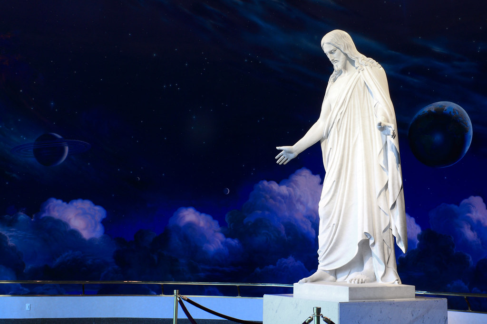
      <span class="brand-text">
        <span class="brand-name">Christus</span>
        <span class="brand-sub">Jewelry</span>
      </span>
    </a>
    <nav class="header-nav" aria-label="Primary">
      <a class="header-link" href="https://www.celestialringdom.com/collections/christus">Shop the Collection</a>
      <a class="header-link" href="https://www.celestialringdom.com/pages/contact">Contact</a>
    </nav>
  </div>
</header>

<main id="top">
  <section class="hero">
    <div class="shell hero-inner">
      <div class="hero-copy">
        <p class="eyebrow">A Collection by Celestial Ringdom</p>
        <h1>The Christus Collection</h1>
        <p class="hero-lead">The Christus, created by Danish sculptor Bertel Thorvaldsen in 1838, depicts the resurrected Saviour. On the base is carved, <em>“Kommer til mig”</em> — Come unto me (Matthew 11:28).</p>
        <p class="hero-lead">Each piece of the Christus Collection reminds us of Christ's invitation.</p>
      </div>

      <figure class="hero-figure">
        
        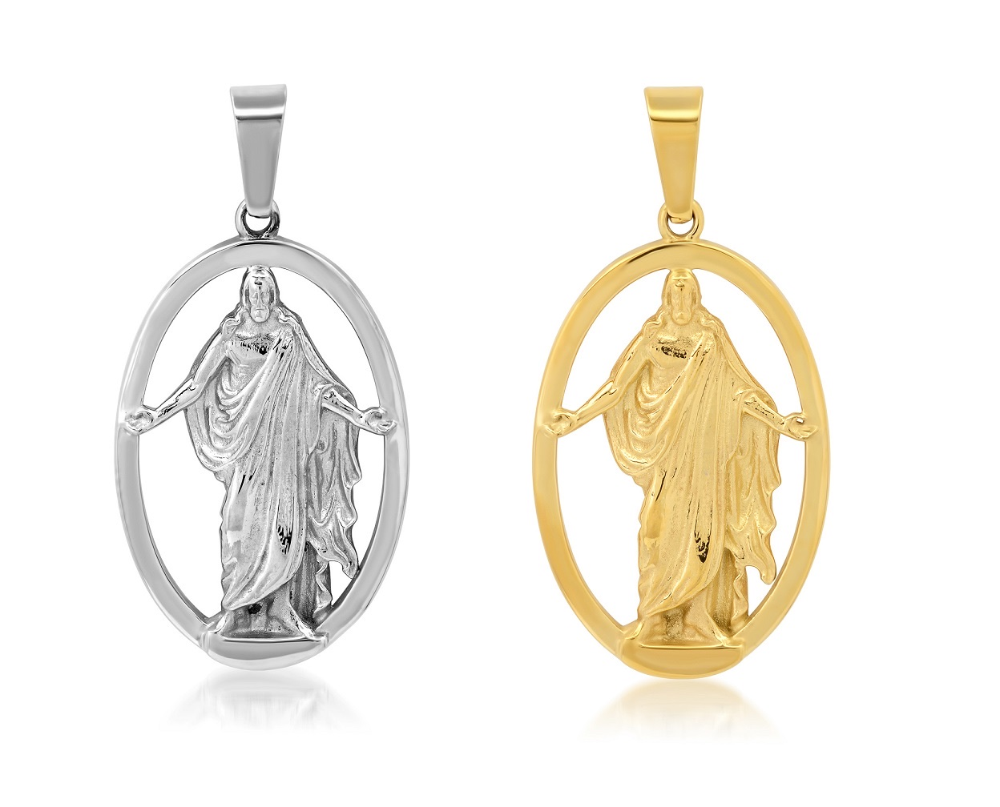
      </figure>
    </div>
  </section>

  <section class="collection" aria-label="The Christus Collection">
    <div class="shell">
      <div class="collection-head">
        <p class="eyebrow">The Collection</p>
        <h2>One Likeness, Many Forms</h2>
      </div>

      <ul class="grid">
        <li class="piece">
          <a class="piece-link" href="https://www.celestialringdom.com/collections/christus/products/christus-necklace-stainless-steel-744">
            <span class="piece-media">
              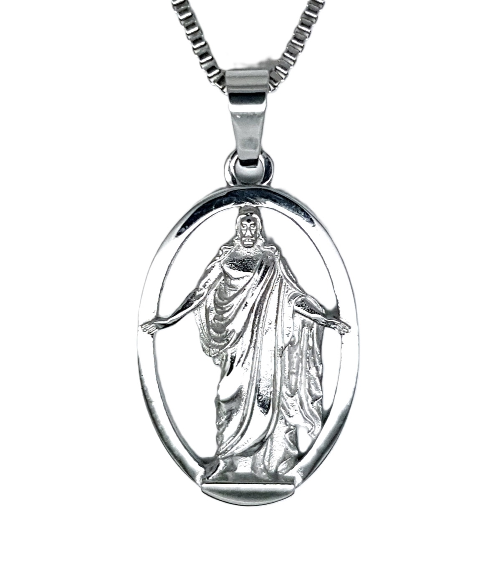
            </span>
            <span class="piece-body">
              <span class="piece-name">Christus Necklace, Stainless Steel #744</span>
              <span class="piece-desc">A durable stainless steel casting of the Copenhagen original, 25mm in height — every fold of the robe carried faithfully into miniature.</span>
              <span class="piece-cta">View at Celestial Ringdom&nbsp;→</span>
            </span>
          </a>
        </li>

        <li class="piece">
          <a class="piece-link" href="https://www.celestialringdom.com/collections/christus/products/christus-necklace-gold-plated-744">
            <span class="piece-media">
              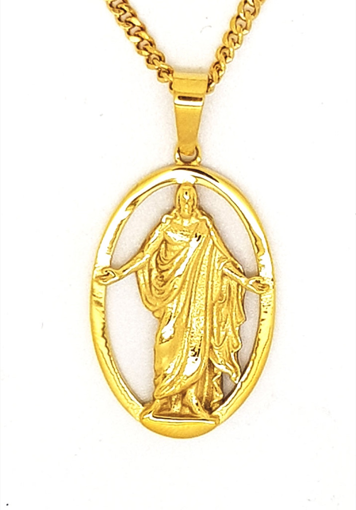
            </span>
            <span class="piece-body">
              <span class="piece-name">Christus Necklace, Gold Plated #744</span>
              <span class="piece-desc">The resurrected Christ, arms extended in welcome, set within an open oval frame. 25mm height, gold plate, 22" adjustable or 24" chain.</span>
              <span class="piece-cta">View at Celestial Ringdom&nbsp;→</span>
            </span>
          </a>
        </li>

        <li class="piece">
          <a class="piece-link" href="https://www.celestialringdom.com/collections/christus/products/christus-necklace-sterling-silver-744">
            <span class="piece-media is-dark">
              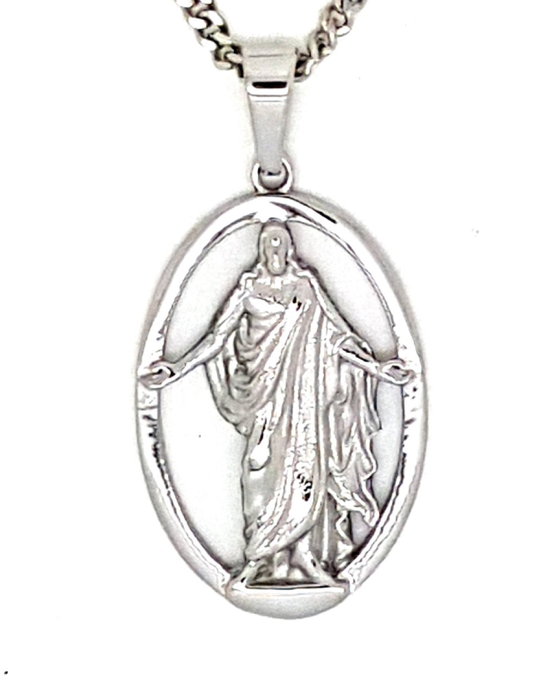
            </span>
            <span class="piece-body">
              <span class="piece-name">Christus Necklace, Sterling Silver #744</span>
              <span class="piece-desc">The same welcoming figure rendered in sterling silver — His gaze toward us, wounds visible, arms open in invitation. 25mm height, 15.4mm width.</span>
              <span class="piece-cta">View at Celestial Ringdom&nbsp;→</span>
            </span>
          </a>
        </li>

        <li class="piece">
          <a class="piece-link" href="https://www.celestialringdom.com/collections/christus/products/christus-necklace">
            <span class="piece-media">
              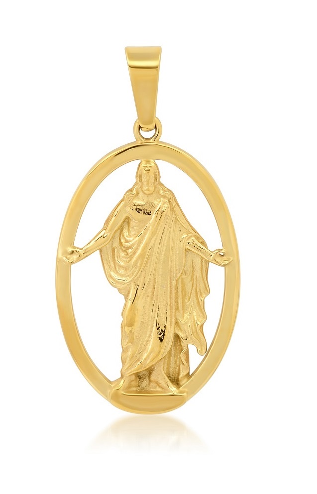
            </span>
            <span class="piece-body">
              <span class="piece-name">Christus Necklace, 14K Gold #744</span>
              <span class="piece-desc">The heirloom version of #744, cast to order in 14K yellow, white, or rose gold. Matching gold chains available in every length.</span>
              <span class="piece-cta">View at Celestial Ringdom&nbsp;→</span>
            </span>
          </a>
        </li>

        <li class="piece">
          <a class="piece-link" href="https://www.celestialringdom.com/collections/christus/products/christus-tie-bar-gold-plated-7421">
            <span class="piece-media">
              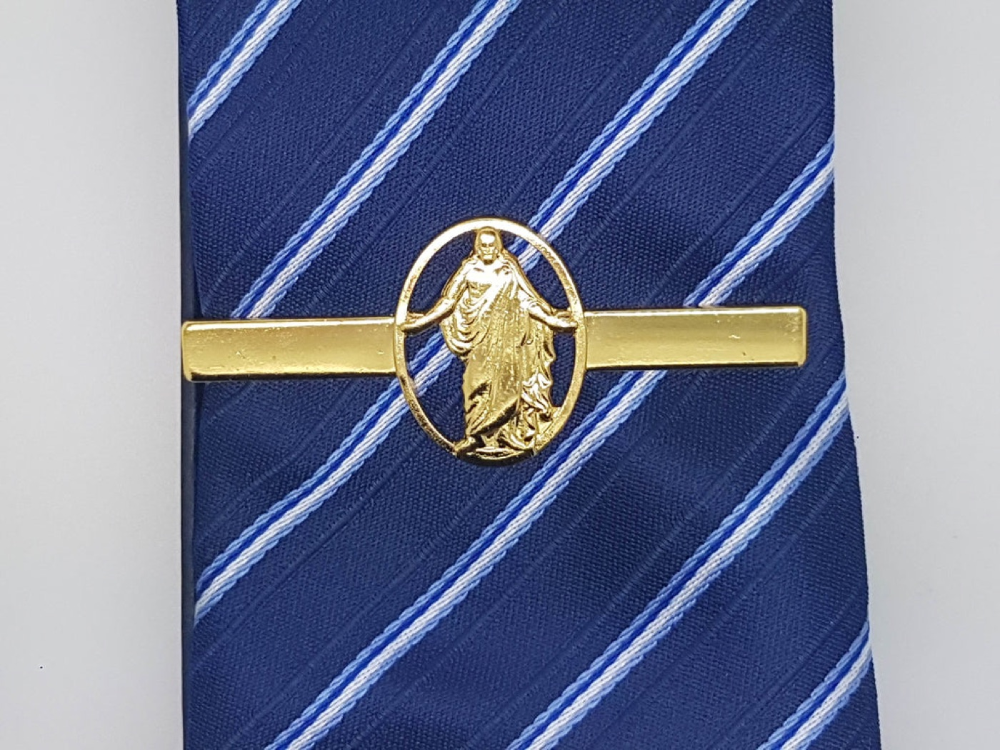
            </span>
            <span class="piece-body">
              <span class="piece-name">Christus Tie Bar, Gold Plated #7421</span>
              <span class="piece-desc">The Christus likeness carried into menswear — a 60mm gold-plated tie bar bearing the same open-armed figure within its oval frame.</span>
              <span class="piece-cta">View at Celestial Ringdom&nbsp;→</span>
            </span>
          </a>
        </li>

        <li class="piece">
          <a class="piece-link" href="https://www.celestialringdom.com/collections/christus/products/copy-of-christus-tie-bar-silver-plated-7422">
            <span class="piece-media">
              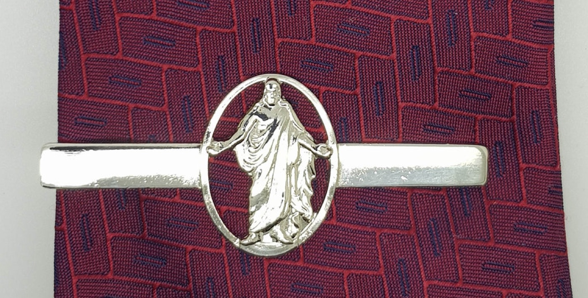
            </span>
            <span class="piece-body">
              <span class="piece-name">Christus Tie Bar, Stainless Steel #7422</span>
              <span class="piece-desc">A stainless steel tie bar, 60mm wide, for quiet daily devotion beneath a jacket — the same figure, the same welcome.</span>
              <span class="piece-cta">View at Celestial Ringdom&nbsp;→</span>
            </span>
          </a>
        </li>

        <li class="piece">
          <a class="piece-link" href="https://www.celestialringdom.com/collections/christus/products/christus-necklace-two-tone-74454">
            <span class="piece-media">
              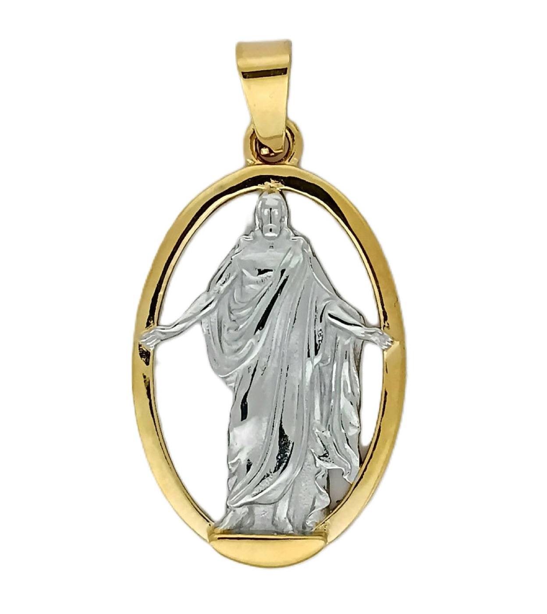
            </span>
            <span class="piece-body">
              <span class="piece-name">Christus Necklace, Two-Tone #74454</span>
              <span class="piece-desc">Stainless steel with 18K gold plating, supplied with a 22" adjustable chain in gift-ready presentation packaging.</span>
              <span class="piece-cta">View at Celestial Ringdom&nbsp;→</span>
            </span>
          </a>
        </li>

        <li class="piece">
          <a class="piece-link" href="https://www.celestialringdom.com/collections/christus/products/christus-large-medallion-necklace-plated-314">
            <span class="piece-media">
              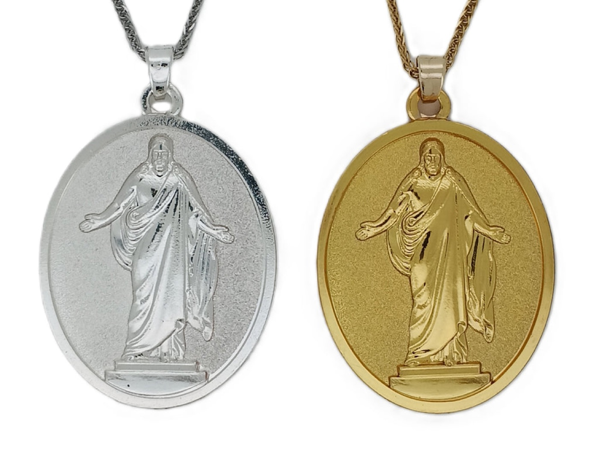
            </span>
            <span class="piece-body">
              <span class="piece-name">Christus Large Medallion Necklace #314</span>
              <span class="piece-desc">A larger medallion, 32mm in height and 26mm wide, available in gold plate or silver plate. It comes with an adjustable 22" chain that can be shortened to any size.</span>
              <span class="piece-cta">View at Celestial Ringdom&nbsp;→</span>
            </span>
          </a>
        </li>

        <li class="piece">
          <a class="piece-link" href="https://www.celestialringdom.com/collections/christus/products/christus-necklace-gold-plated-424">
            <span class="piece-media">
              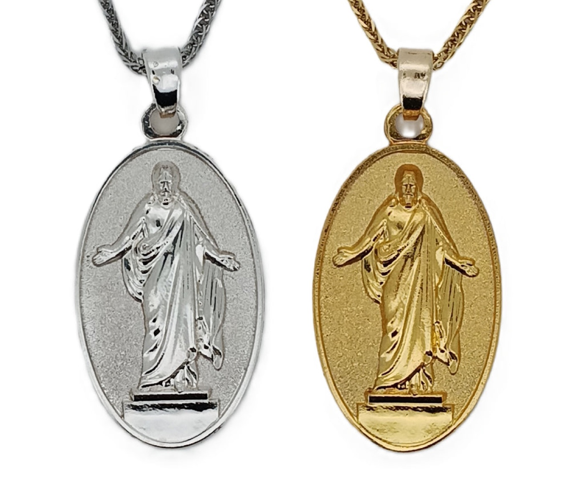
            </span>
            <span class="piece-body">
              <span class="piece-name">Christus Medallion Necklace #424</span>
              <span class="piece-desc">A medallion, 25mm in height and 15.4mm wide, available in gold plate or silver plate. It comes with an adjustable 22" chain that can be shortened to any size.</span>
              <span class="piece-cta">View at Celestial Ringdom&nbsp;→</span>
            </span>
          </a>
        </li>
      </ul>
    </div>
  </section>

  <section class="closing">
    <div class="shell closing-inner">
      <h2>See the Full Collection</h2>
      <p>Every piece above is available now at Celestial Ringdom, where the collection can be viewed in full and ordered directly.</p>
      <div class="closing-actions">
        <a class="btn" href="https://www.celestialringdom.com/collections/christus">Shop the Christus Collection</a>
        <a class="btn btn-ghost" href="https://www.celestialringdom.com/pages/contact">Contact Us</a>
      </div>
    </div>
  </section>
</main>

<footer class="site-footer">
  <div class="shell footer-inner">
    <p class="footer-name">Christus Jewelry</p>
    <p class="footer-line">A collection by Celestial Ringdom — <a class="footer-tel" href="tel:+18018766555">(801) 876-6555</a> &middot; <a class="footer-tel" href="https://www.celestialringdom.com/pages/contact">Contact</a></p>
    <p class="footer-copy">&copy; <span id="year">2026</span> Celestial Ringdom. All designs and product imagery belong to their respective owner.</p>
  </div>
</footer>

<script type="application/ld+json">
{
  "@context": "https://schema.org",
  "@graph": [
    {
      "@type": "WebSite",
      "@id": "https://www.christusjewelry.com/#website",
      "url": "https://www.christusjewelry.com/",
      "name": "Christus Jewelry",
      "description": "The Christus Collection — necklaces, medallions and tie bars inspired by Bertel Thorvaldsen's 1838 Christus sculpture.",
      "inLanguage": "en",
      "publisher": { "@id": "https://www.celestialringdom.com/#organization" }
    },
    {
      "@type": "Organization",
      "@id": "https://www.celestialringdom.com/#organization",
      "name": "Celestial Ringdom",
      "url": "https://www.celestialringdom.com/",
      "telephone": "+1-801-876-6555",
      "email": "info@celestialringdom.com",
      "contactPoint": {
        "@type": "ContactPoint",
        "contactType": "customer service",
        "telephone": "+1-801-876-6555",
        "email": "info@celestialringdom.com",
        "url": "https://www.celestialringdom.com/pages/contact"
      }
    },
    {
      "@type": "CollectionPage",
      "@id": "https://www.christusjewelry.com/#webpage",
      "url": "https://www.christusjewelry.com/",
      "name": "Christus Jewelry — The Christus Collection",
      "isPartOf": { "@id": "https://www.christusjewelry.com/#website" },
      "about": "The Christus Collection by Celestial Ringdom",
      "mainEntity": { "@id": "https://www.christusjewelry.com/#collection" }
    },
    {
      "@type": "ItemList",
      "@id": "https://www.christusjewelry.com/#collection",
      "name": "The Christus Collection",
      "itemListOrder": "https://schema.org/ItemListOrderAscending",
      "itemListElement": [
        { "@type": "ListItem", "position": 1, "name": "Christus Necklace, Stainless Steel #744", "image": "https://www.christusjewelry.com/images/christus-necklace-stainless-steel-744.jpg", "url": "https://www.celestialringdom.com/collections/christus/products/christus-necklace-stainless-steel-744" },
        { "@type": "ListItem", "position": 2, "name": "Christus Necklace, Gold Plated #744", "image": "https://www.christusjewelry.com/images/christus-necklace-gold-plated-744.jpg", "url": "https://www.celestialringdom.com/collections/christus/products/christus-necklace-gold-plated-744" },
        { "@type": "ListItem", "position": 3, "name": "Christus Necklace, Sterling Silver #744", "image": "https://www.christusjewelry.com/images/christus-necklace-sterling-silver-744.jpg", "url": "https://www.celestialringdom.com/collections/christus/products/christus-necklace-sterling-silver-744" },
        { "@type": "ListItem", "position": 4, "name": "Christus Necklace, 14K Gold #744", "image": "https://www.christusjewelry.com/images/christus-necklace-14k-gold-744.jpg", "url": "https://www.celestialringdom.com/collections/christus/products/christus-necklace" },
        { "@type": "ListItem", "position": 5, "name": "Christus Tie Bar, Gold Plated #7421", "image": "https://www.christusjewelry.com/images/christus-tie-bar-gold-plated-7421.jpg", "url": "https://www.celestialringdom.com/collections/christus/products/christus-tie-bar-gold-plated-7421" },
        { "@type": "ListItem", "position": 6, "name": "Christus Tie Bar, Stainless Steel #7422", "image": "https://www.christusjewelry.com/images/christus-tie-bar-stainless-steel-7422.jpg", "url": "https://www.celestialringdom.com/collections/christus/products/copy-of-christus-tie-bar-silver-plated-7422" },
        { "@type": "ListItem", "position": 7, "name": "Christus Necklace, Two-Tone #74454", "image": "https://www.christusjewelry.com/images/christus-necklace-two-tone-74454.jpg", "url": "https://www.celestialringdom.com/collections/christus/products/christus-necklace-two-tone-74454" },
        { "@type": "ListItem", "position": 8, "name": "Christus Large Medallion Necklace, Plated #314", "image": "https://www.christusjewelry.com/images/christus-large-medallion-necklace-314.jpg", "url": "https://www.celestialringdom.com/collections/christus/products/christus-large-medallion-necklace-plated-314" },
        { "@type": "ListItem", "position": 9, "name": "Christus Medallion Necklace, Plated #424", "image": "https://www.christusjewelry.com/images/christus-medallion-necklace-424.jpg", "url": "https://www.celestialringdom.com/collections/christus/products/christus-necklace-gold-plated-424" }
      ]
    }
  ]
}
</script>

<script src="script.js"</script>
